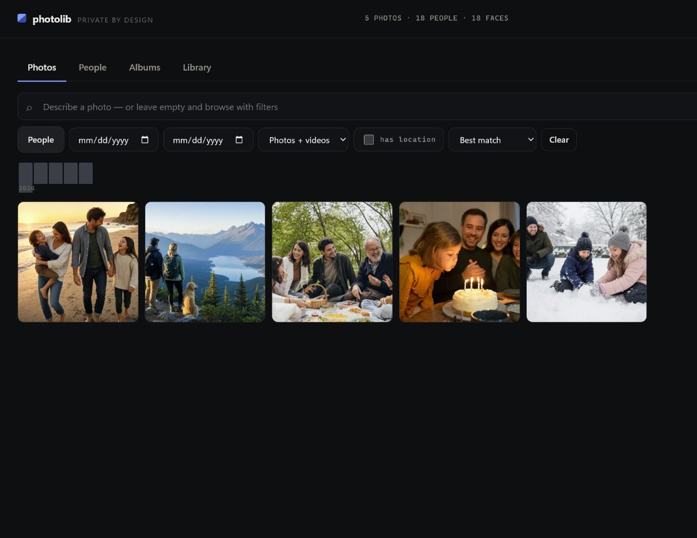
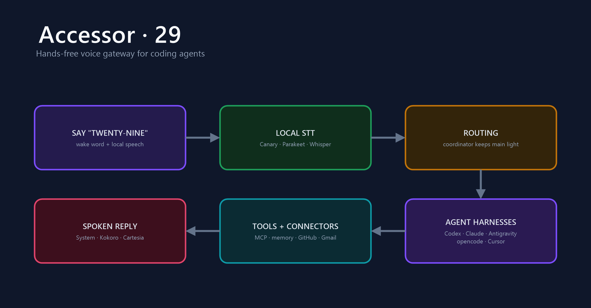
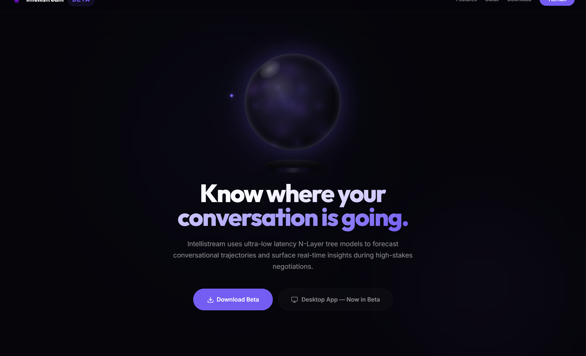
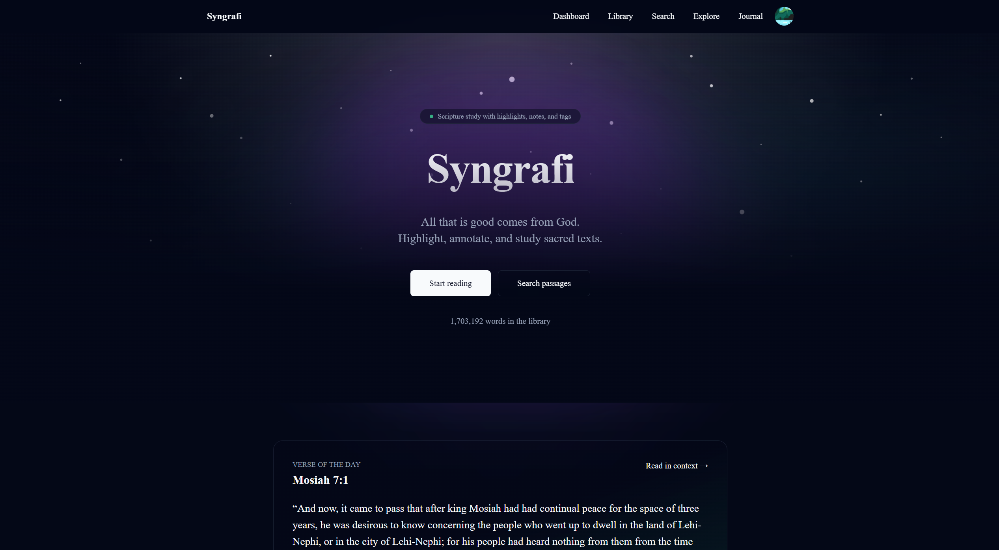
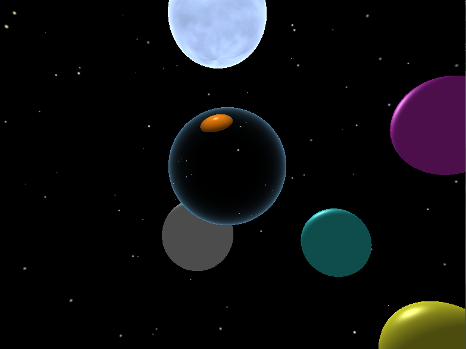
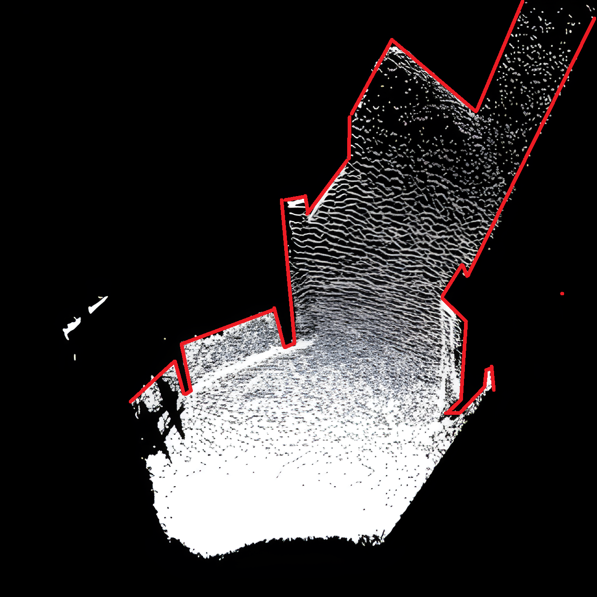
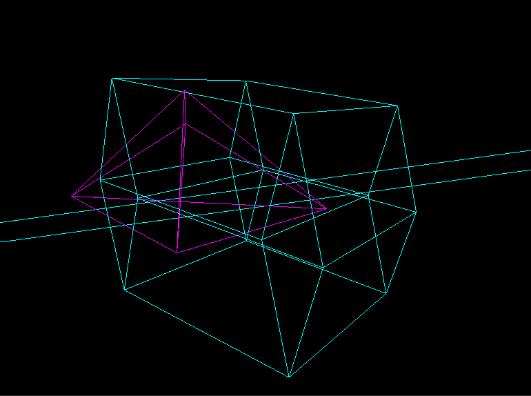
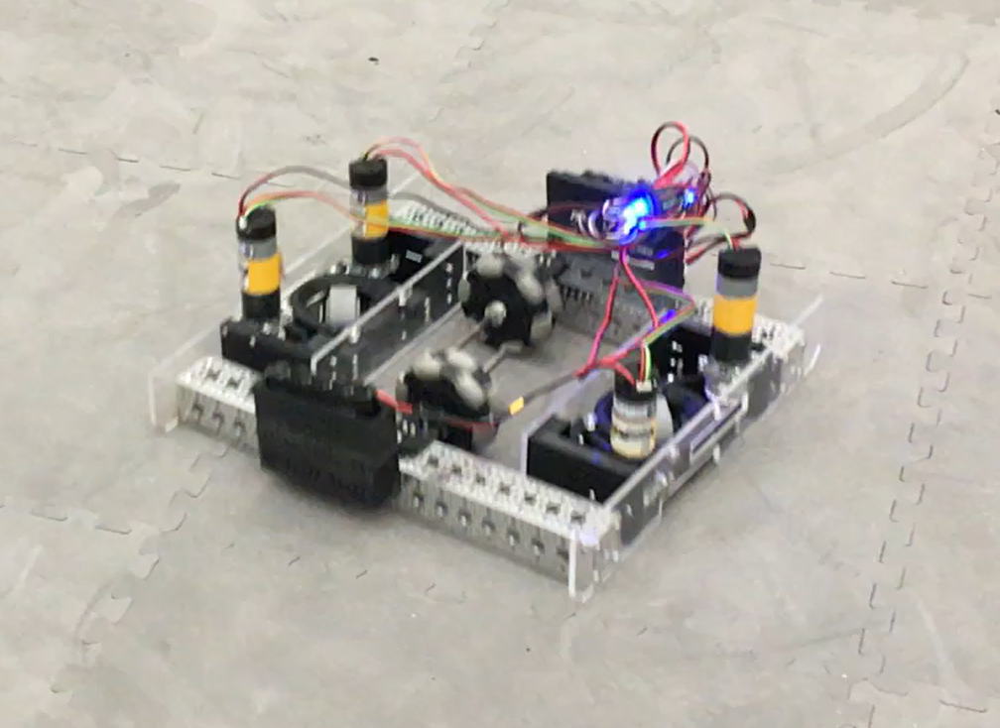
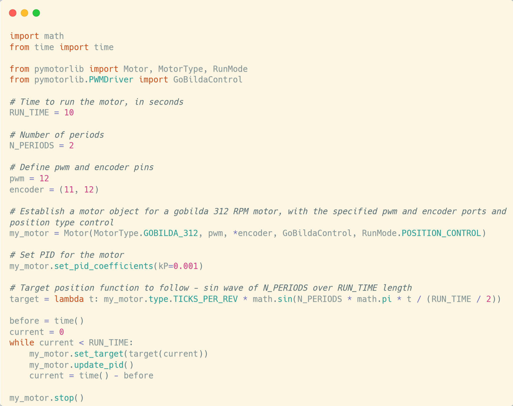

My Projects
Personal projects that are not confidential (patents) or research.

Photolib
A private, local photo library for Windows. Find photos by description or person, browse dates and places, organize albums, and spot duplicates. Search runs on your computer with a bundled offline model.

Accessor
A local voice gateway for coding agents. Talk to Codex, Claude Code, and other agent harnesses, with local speech recognition, spoken replies, and shared memory.

SatelliteSim.jl (ss.jl)
Satellite mission simulation in Julia: launch vehicles, orbital flight, lunar missions, and atmospheric reentry, with an interactive browser interface.

chess-3d
A true 3D chess game, allowing pieces to move in three dimensions, with toptobes.

Lofall
A four-dimensional browser platformer. Navigate 3D cross-sections of 4D space, rotate the w-axis to reveal hidden paths, and explore an infinite seeded universe.

Redsim
Discrete-time simulation of an early Mars outpost. Models environmental physics, life-support systems,
power generation, resource loops, agent physiology, and base operations — all exposed via a REST API,
a Next.js dashboard, and a Java 3D graphical client.

Intellistream
Real-time predictive conversational intelligence for meetings, with a free tier available.

Syngrafi
Universal scripture study with highlights, notes, and tags, powered by semantic search. Supports the Bible, Koran, Bhagavad Gita, The Book of Mormon, and more.

Wormhole Simulation

kinect-terrain-tracker
A fast and efficient floor detection system using raw
depth data from the Xbox One Kinect, projecting the detected floor into a bird's-eye view with dynamic
calibration.

4d-projection
Loads 4D meshes and renders them in 3D using hyperplanar slices.

coyote
A pathing and control library for 2-wheel differential swerve drives. I also
used CAD to design the drivetrain & built it.

motor-lib
A library for PWM-based control of 12V DC motors in Python. Requires a GPIO
device.
turing-machine-language
An instructional language based on Alan Turing's original conception of a
Turing machines.
space-mission-planner
Demo project that calculates trajectories and fuel requirements for different
transfers.
kalman-flight-demo
Interactive Kalman filter demo: a rocket navigating by fusing a noisy IMU with
intermittent GPS. Tune the filter, cut the GPS, and watch the uncertainty ellipse breathe.